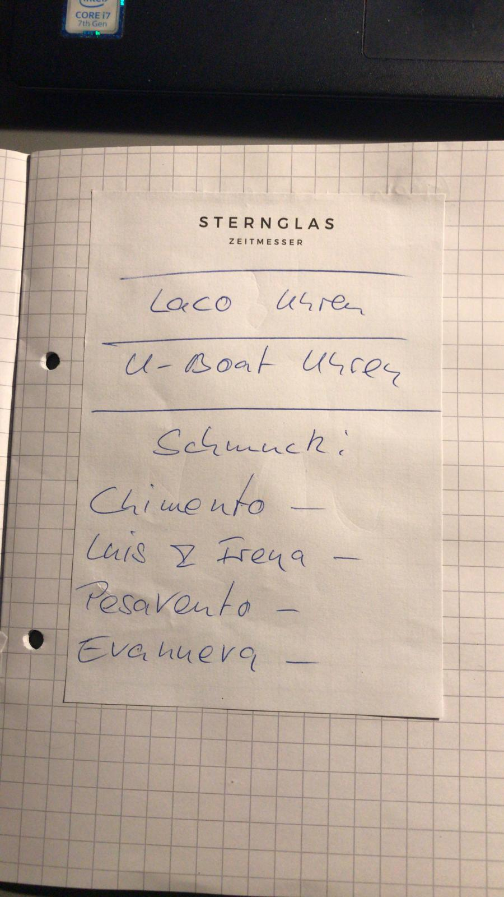
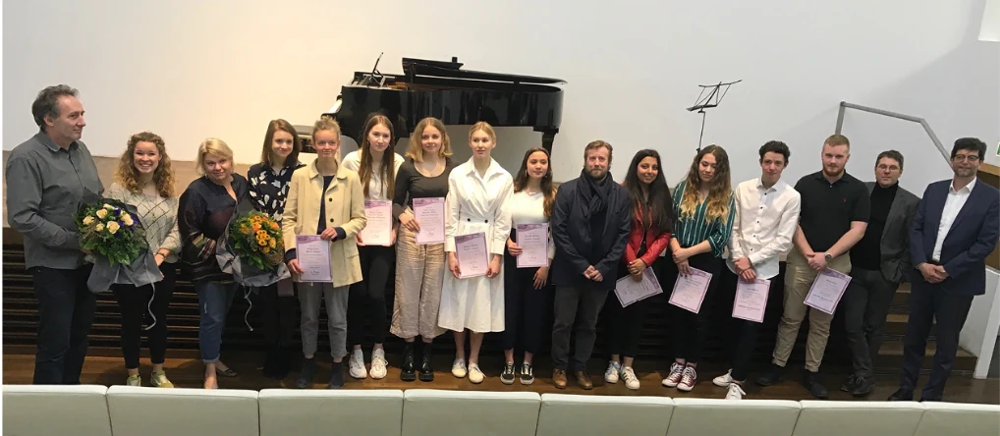
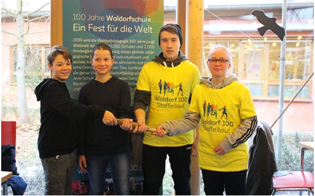
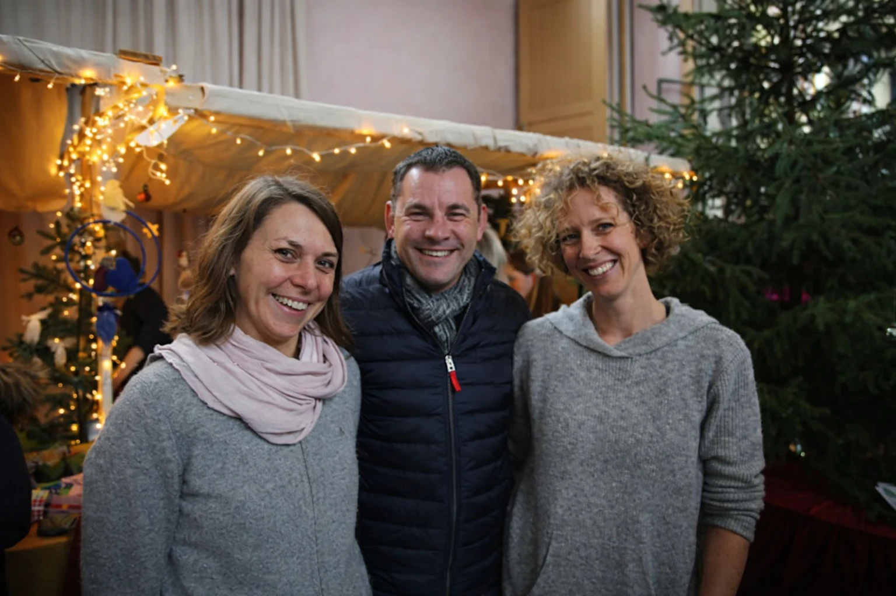

Medienberichte
Berichte aus lokalen und überregionalen Medien über unsere Schulgemeinschaft.
Eigene Veröffentlichungen
Offizielle Mitteilungen und Berichte aus unserem Schulleben.
26 Schülerinnen und Schüler der Freien Waldorfschule Wiesbaden nahmen an einem Fotowettbewerb zum Jubiläum „100 Jahre Waldorfschulen" teil und stellten ihre Werke im Museum Wiesbaden aus.
Im Rahmen des Wettbewerbs wurden besondere Leistungen ausgezeichnet: In der Kategorie Konventionelle Fotografie erhielten Rosa Tinico Mittler und Alisa Schmidt Preise. Anouk Mewes und Yasmin Touzini wurden in der Kategorie Porträts geehrt. Die Gruppe aus Sonja Fischer, Flora von Debschitz, Hannah Schloz und Katja Huss überzeugte in der Kategorie Unter Wasser.
Die Ausstellung war Teil der bundesweiten Feierlichkeiten zum 100-jährigen Bestehen der Waldorfschulbewegung und zog zahlreiche Besucherinnen und Besucher ins Museum Wiesbaden.

Im Rahmen der bundesweiten Jubiläumsfeierlichkeiten zu „100 Jahre Waldorfschule" wurde das symbolische Staffelholz an die Freie Waldorfschule Wiesbaden übergeben. Die Übergabe fand in feierlichem Rahmen statt und würdigte die Bedeutung der Waldorfpädagogik für die Bildungslandschaft in Deutschland.
Die Freie Waldorfschule Wiesbaden, gegründet 1985, gehört zu den lebendigen Vertreterinnen dieser traditionsreichen Pädagogik im Rhein-Main-Gebiet.

Oberbürgermeister Sven Gerich besuchte den traditionellen Herbstmarkt der Freien Waldorfschule Wiesbaden und zeigte sich beeindruckt von der Vielfalt und Qualität der handgefertigten Produkte sowie der warmherzigen Atmosphäre in der Schulgemeinschaft.
Der Herbstmarkt gehört zu den jährlichen Höhepunkten des Schullebens und bringt Schülerinnen, Schüler, Eltern, Lehrende und die Wiesbadener Öffentlichkeit zusammen.

Für Journalist:innen
Wenn Sie Redakteur oder Journalist sind, Pressearbeit im Verlag, für eine Zeitung oder Zeitschrift machen, können Sie uns kontaktieren.
Wir sind gerne bereit, Ihre Fragen zu beantworten oder eine Besichtigung in unserer Schule zu organisieren.